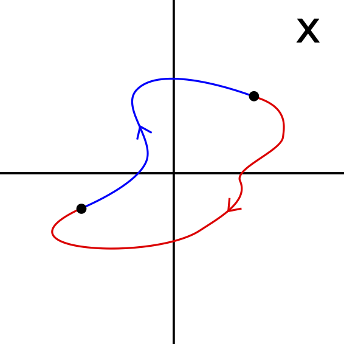

Galois theory studies the solutions of the polynomial equations
\[ a_0 x^n + a_1 x^{n-1} + \dots + a_{n-1} x + a_n = 0, \]
with a finite number of coefficients \(a_0,\dots,a_n\) in the field \(K\) with \(a_0 \neq 0\). Famously, Abel-Ruffini’s theorem (1824) proves that this equation has only a general closed form solution for \(n\leq 4\). Vladimir I. Arnol’d developed a beautiful elementary proof of the solvability of polynomial equations using topological Galois theory (1963). This topological proof is much simpler than the more coventional proof using Galois theory. In the notes presented here, I will discuss Arnol’d’s proof of Abel-Ruffini’s theorem while keeping the discussion elementary. For simplicity, I will only consider polynomials over the complex number field \(K=\mathbb{C}\). I will only assume an elementary understanding of complex numbers and group theory. An expert might want to skip the more elementary sections.
Before going into the math, it is good to note that Abel-Ruffini’s theorem does not apply to particular polynomial equations with degree higher than \(4,\) i.e., the simple equation \(x^5 = 1\) has well-known solutions \(x=e^{2\pi i k/5}\) for \(k=0,1,2,3,4\). It rather discusses the extension of the abc-formula for higher-degree polynomial equations. Famously, the equation \(x^5 -x -1=0\) is the simplest polynomial equation with no closed form solution in terms of a finite number of the usual elementary operations. Note that, using the equation \(x=\sqrt[5]{1+x}\) (one of the roots), the solutions can be expressed as an infinite tower of nested roots
\[x=\sqrt[5]{1+\sqrt[5]{1 + \sqrt[5]{1+\dots}}},\]
where the different values of the quintic root, chosen consistently, give the \(5\) distinct roots. Note that every complex root is multi-valued. As a consequence, an inifinite nested expression can generally assume an infinite number of values.
These notes are based on a series of lectures by V.I. Arnol’d delivered to secondary school students in Moscow (1963). A transcript of these lectures can be found in the book Abel’s Theorem in Problems and Solutions. I also used the review paper by Henryk Żolądek and the talk by Michael O’Connor.
Famously, only the linear, quadratic, cubic, and quartic polynomials have general solutions in terms of a finite number of the elementary operations (addition, subtraction, multiplication, raising to a natural power, and taking the natural root) in terms of the coefficients \(a_i\). For completeness, I will here derive these solutions.
The linear equation
\[a x + b =0,\]
has the unique solution \(x = -b/a\).
The quadratic equation
\[a x^2 + b x + c = 0,\]
has two well-known solutions expressed by the famous abc-formula
\[x_{\pm} = \frac{-a \pm \sqrt{b^2 -4 a c}}{2a}.\]
In this equation the discriminant \(\Delta= b^2 - 4 ac\) determines whether the two roots are real \(\Delta >0,\) complex \(\Delta <0,\) or whether it is a double root \(\Delta =0\). Methods for solving quadratic equations date back to antiquity. It is well-known that Babylonian engineers worked with the quadratic equation in 2000 B.C. There is evidence for the abc-formula dating back to the Third Dynasty of Ursee (see Mathematics and Its History by John Stillwell for more information).
Let’s for completeness derive the abc-formula. Upon division by \(a,\) we obtain the monic quadratic equation
\[ f(x) = x^2 + p x +q=0\]
for \(p=b/a\) and \(q=c/a\). Since the monic quadratic polynomial can be written in terms of the roots \(f=(x-x_+)(x-x_-)\) (assume this for the moment or see proof below), we find the identities \(p = -(x_++x_-)\) and \(q = x_+ x_-,\) known as Viète’s theorem. Using the symmetry of the parabola \(f\) with respect to the mean of the roots \((x_+ + x_-)/2 = -p/2,\) we write the roots as \(x_\pm = -p/2 \pm z\) for some to be determined complex number \(z\). Using the identity for \(q,\) we find
\[ \begin{align} q &= (-p/2 + z)(-p/2 -z)\\ &=p^2/4 -z^2, \end{align} \]
by which \(z = \sqrt{p^2/4-q}\). The roots are thus
\[ x_\pm = \frac{-p\pm \sqrt{p^2-4q}}{2}, \]
or in the more familiar notation
\[ x_\pm =\frac{-a \pm \sqrt{b^2 -4 a c}}{2a}. \]
The cubic equation
\[a_0 x^3 + a_1 x^2 + a_2 x +a_3=0,\]
assumes the generic form
\[ x^3 + a x^2 + bx +c=0,\]
upon division by \(a_0\). Substituting \(x= y+d\) (for a free number \(d\)),
\[ \begin{align} 0&=(y+d)^3 + a (y+d)^2 + b(y+d) +c\\ &=y^3 + (3d + a) y^2 + (3d^2+2ad + b)y + (d^3 + ad^2 + bd + c), \end{align} \]
and selecting \(d=-a/3,\) the equation reduces to
\[y^3 + p y + q = 0,\]
with \(p=a^2/3 + 2 ad + b\) and \(q =-a^3/27 + ad^2 + bd + c\). Writing a root \(y_0\) as \(y_0=\alpha + \beta\) for some \(\alpha,\beta\in \mathbb{C},\) we obtain
\[\alpha^3 + \beta^3 + (\alpha + \beta)(3\alpha \beta + p) + q = 0.\]
If we can find \(\alpha\) and \(\beta\) such that they, in addition to \(y_0 = \alpha + \beta\), satisfy the relation \(\alpha \beta = - p/3,\) (which is always possible since the combination of conditions yields a quadratic equation), the identity simplifies to
\[\alpha^3 + \beta^3= -q.\]
Raising the relation of \(\alpha\) and \(\beta\) to the third power, we obtain an additional identity for the cubes of \(\alpha\) and \(\beta,\) i.e., \(\alpha^3 \beta^3 = - p^3/27.\) Now using Viète’s theorem, the cubes \(\alpha^3\) and \(\beta^3\) are the roots of the quadratic equation
\[\omega^2 + q \omega - \frac{p^3}{27} = 0,\]
yielding the solutions
\[ \begin{align} \alpha^3 &= -\frac{q}{2} + \sqrt{\frac{q^2}{4} + \frac{p^3}{27}},\\ \beta^3 &= -\frac{q}{2} - \sqrt{\frac{q^2}{4} + \frac{p^3}{27}}. \end{align} \]
Taking the cubic root, with the requirement that \(\alpha \beta = -p/3,\) we obtain the three general solutions
\[ y = \sqrt[3]{-\frac{q}{2} + \sqrt{\frac{q^2}{4} + \frac{p^3}{27}}} + \sqrt[3]{-\frac{q}{2} - \sqrt{\frac{q^2}{4} + \frac{p^3}{27}}}. \]
Note that we can interpret the square and the cube root to be double- and triple-valued. This makes the formula \(12\)-valued (\(3 \times 2 + 3 \times 2=12\)), of which three unique values satisfy the cubic equation.
This formula is known as Cardano’s formula, named after the Italian mathematician Gerolamo Cardano who published the formula in the book Ars Magna (1545).
The quartic equation
\[a_0 x^4 + a_1 x^3 + a_2 x^2 +x a_3 + a_4=0,\]
assumes the generic form
\[ x^4 + a x^3 + bx^2 +c x + d=0,\]
upon division by \(a_0\). Setting \(x = y - a/4,\) the quartic polynomial reduces to
\[y^4 + p y^2 + q y + r = 0,\]
for some \(p, q,\) and \(r\) in terms of \(a,b,c,\) and \(d\). Using Ferrari’s method, we can write the left hand side as
\[\left( y^2 + \frac{p}{2} + \alpha \right)^2 - \left[2\alpha\left(y^2 + \frac{p}{2}\right) + \alpha^2 - q y + \frac{p^2}{4} - r\right] = 0,\]
with the free number \(\alpha\). Now, choose \(\alpha\) such that the identity in the square brackets
\[g = 2\alpha y^2 - q y + \left(\alpha p + \alpha^2 + \frac{p^2}{4} - r\right),\]
is a perfect square, i.e., the discriminant vanishes
\[\Delta =q^2 - 8 \alpha \left( \alpha p + \alpha^2 + \frac{p^2}{4} -r\right) = 0.\]
This is a cubic equation in \(\alpha\) which we can solve using Cardano’s formula. For one of the roots of the cubic equation \(\alpha_0,\) we obtain the double root \(y_0 = \frac{q}{4 \alpha_0}\) of the quadratic polynomial \(g,\) i.e., for \(\alpha = \alpha_0,\) we obtain \(g=2\alpha_0(y-y_0)^2\). Substituting \(\alpha= \alpha_0,\) the original equation assumes the form
\[\left( y^2 + \frac{p}{2} + \alpha_0\right)^2 - 2 \alpha_0(y-y_0)^2 = 0,\]
which is the difference of two squares, which enables us to factor the identity, i.e., \(a^2-b^2 =(a+b)(a-b)\). Hence, using the cubic formula, we can write the quartic equation as the product of two quadratic equations which yield the solutions for \(y\) and the original quartic in terms of \(x\) using the abc-formula. We do not give a closed-form solution due to its length. This result is attributed to the Italian mathemetician Lodovico Ferrari, who was a student of Gerolamo Cardano. The quartic formula was published together with the cubic formula in the book Ars Magna (1545). In 1637, René Descartes developed an alternative derivation by factoring the quartic in terms of two quadratics \(x^4 + bx^3 + c x^2 + d x + e = (x^2 + sx + t)(x^2 + ux +v)\) for numbers \(s,t,u,v\in \mathbb{C}\). Finding \(s,t,u,v\) in terms of \(b,c,d,e\) requires the solution of the cubic equation. In 1765, Leonhard Euler developed a variation on the Descartes method.
Given these achievements in renaissance Italy, the question arose whether these results extend to higher-degree polynomial equations. This does not turn out to be the case. In 1799, Paolo Ruffini constructed a proof for the unsolvability of higher-degree polynomials. However, the proof was long, incomplete, and not accepted by the mathematical community. In 1824, Niels H. Abel generated a complete proof of the statement. In 1832, the theory on solvable polynomials was further refined by Évariste Galois. We here present an elementary proof of Abel-Ruffini’s theorem by Vladimir I. Arnol’d (1963) using topological methods, which is considerably simpler than the original proofs.
Abel-Ruffini’s theorem: The generic algebraic equation of degree higher than four is not solvable by radicals, i.e., formulae do not exist for expressing roots of a generic equation of degree higher than four in terms of its coefficients by means of a finite number of operations of addition, subtraction, multiplication, division, raising to a natural power, and extraction of a root of natural degree.
Define a curve \(C\) in \(\mathbb{C}\) by a continuous function \(\gamma:[0,1]\to \mathbb{C}\) which parametrizes the curve, i.e., \(C=\{\gamma(t)|t\in[0,1]\}\). The curve \(C\) is called a loop whenever the endpoints coincide, i.e., \(\gamma(0)=\gamma(1)\). We define the winding number of a loop with respect to a point \(p \in \mathbb{C},\) which does not cross \(p,\) as the number of times the loop travels counterclockwise around the point \(p\). Using Cauchy’s integral formula, we can formally define the winding number \(\nu_p\) as
\[ \begin{align} \nu_p(C) &=\frac{1}{2\pi i} \oint_C \frac{\mathrm{d}x}{x - p} \\ &= \frac{1}{2\pi i} \int_0^1 \frac{\gamma'(t)}{\gamma(t)-p}\mathrm{d}t. \end{align} \]
The winding number of the unit circle, \(U(1)=\{x \in \mathbb{C} | |x|=1\}\) traversed in the counterclockwise direction \(\gamma(t) = e^{2 \pi i t},\) with respect to the origin yields
\[ \nu_0(U(1)) = \frac{1}{2\pi i} \int_0^1 \frac{\gamma'(t)}{\gamma(t)}\mathrm{d}t=1. \]
When traveling in the clockwise direction, \(\gamma(t)=e^{-2\pi i t},\) the winding number changes sign, i.e., \(\nu_0(U(1))=-1\).
Now consider a complex continuous function \(f:\mathbb{C}\to \mathbb{C}\) that maps every point \(z \in \mathbb{C}\) to a unique point \(\omega = f(z) \in \mathbb{C}\). The function \(f\) maps the curve \(C\) to the curve \(f(C) = \{f(\gamma(t))|t\in [0,1]\} \subset \mathbb{C},\) with the parametrization \(f \circ{} \gamma:[0,1]\to \mathbb{C}\) (where \(\circ{}\) is the composition operation). See figure 1 for an illustration. The winding number of the new curve, assuming it does not intersect the winding point, can differ from the winding number of the original curve. For example, for the unit circle \(C=U(1)\) traversed in the counterclockwise direction and the elementary function \(f=x^n,\) the curve \(f(C)\) closes and the winding number with respect to the origin is given by \(\nu_0(f(U(1))) = n\). When the function is a root, \(f=\sqrt[n]{x},\) the function will map the loop to a curve with distinct endpoints, i.e.,
\[ \frac{1}{2\pi i} \int_{f(U(1))}\frac{ \mathrm{d}x}{x} = \frac{1}{2\pi i} \int_0^1 \frac{ \mathrm{d}(e^{2\pi i t /n})}{\mathrm{d} t} \frac{1}{e^{2\pi i t/n}}\mathrm{d}t= \frac{1}{n}, \]
where we selected the positive root for \(x>0\). For the \(n\)-th root, it takes \(n\) resolutions around the branch point \(x=0\) to return to the original position on the original Riemann sheet (see more details below).
We can use the winding number of maps to prove that every non-constant polynomial has at least one complex root.
The fundamental theorem of algebra: The \(n\)-th degree polynomial, with \(n \geq 1\) has at least one complex root.
Proof: When \(a_n=0,\) we find the root \(x_0=0,\) as the polynomial factorizes trivially
\[a_0 x^n + \dots + a_{n-1} x = x(a_0 x^{n-1} + \dots + a_{n-1}).\]
When \(a_n \neq 0,\) we use the fact that the constant function \(a_n\) has a vanishing winding number while \(a_0 x^n\) has a winding number of \(n\). Let \(A=\max(|a_0|,|a_1|,\dots,|a_n|) \geq |a_n| >0,\) and select two positive numbers \(R_1 < \min\left(1, \frac{|a_n|}{10 An}\right)\) and \(R_2> \max\left(1, \frac{10 A n}{|a_0|}\right)\) (where the factor \(10\) is an arbitrary positive number larger than \(1\)). It follows that when \(|x| = R_1,\)
\[ \begin{align} |a_0 x^n + \dots + a_{n-1} x| &\leq |a_0| |x|^n + \dots + |a_{n-1}||x|\\ &\leq (|a_0|+\dots + |a_{n-1}|) R_1\\ &\leq n A R_1\\ & \leq n A \frac{|a_n|}{10 A n} = \frac{|a_n|}{10}, \end{align} \]
where the first inequality follows from the triangle inequality, the second follows from \(|x| = R_1 < 1,\) and the last follows from \(R_1 \leq \frac{|a_n|}{10 A n}\). For large \(|x| = R_2,\) we can prove a similar inequality
\[ \begin{align} \left| \frac{a_1}{x} + \dots + \frac{a_n}{x^n}\right| &\leq \left| \frac{a_1}{x}\right| + \dots + \left| \frac{a_n}{x^n}\right| \\ &\leq \frac{|a_1|}{R_2} + \dots + \frac{|a_n|}{R_2}\\ &\leq \frac{n A}{R_2}\\ &\leq \frac{nA|a_0|}{10n A} = \frac{|a_0|}{10}, \end{align} \]
where the first inequaility follows from the triangle inequaility, the second follows from \(|x| = R_2 \geq 1,\) and the last follows from \(R_2 \geq \frac{10 A n}{|a_0|}\).
Now consider the winding number of \(f(C_R)\) around the origin along the circle \(C_R = \{x \in \mathbb{C}| |x| = R\}\) parametrized by the curve \(\gamma_R(t)=R e^{2\pi i t}\). For small \(R = R_1\) the constant term of the polynomial dominates over all the higher order terms. The trajectory \(f\circ{} \gamma_R\) starts and ends at \(f(R),\) and does not circle the origin as it is convined to a disk of radius \(|a_n| / 10\) centred at \(a_n,\) as \(|f(x)-a_n| \leq |a_n|/10\). Consequently, the winding number \(\nu_0(C_{R_1}) =0\) for \(R=R_1\). For large circles, \(R = R_2,\) the highest order term of the polynomial dominates over the lower order terms. Since \(|f(x)/x^n - a_0 | \leq |a_0|/10,\) the function \(f(x)/x^n\) cannot circle the origin as it is convined to a disk of radius \(|a_0|/10\) centred at \(a_0\). Now as \(f(x) = \left(\frac{f(x)}{x^n}\right) x^n,\) we find that \(f,\) like \(a_0x^n,\) circles the origin \(n\) times. The winding number \(\nu_0(C_{R_2}) = n,\) as the parametrization \(f\circ{} \gamma_{R_2}\) aquires a phase \(2\pi n\).
The winding number is a topological invariant as a continuous deformation of the curve will not change the number of times it circles \(0,\) unless the curve at some point in the deformation passes through the origin, where it is not defined. This topological property follows from Cauchy’s integral theorem. Since the winding number is integer valued and changes while \(R\) in creases from \(R=R_1\) to \(R_2\), i.e., \(\nu_0(C_{R_1}) = 0\) and \(\nu_0(C_{R_2}) = n > 0,\) the intermediate value theorem proves that there must exist a \(R'\) between \(R_1\) and \(R_2\) for which \(C_{R'}\) passes through \(0\). We have found a complex root of the polynomial equation without constructing the solution!
We can use this root \(x_0\) to write the polynomial \(f\) as a simpler polynomial \(g\) times \((x-x_0)\).
Bézout’s theorem: If \(x_0\) is a root of the equation \(a_0\, x^n+\dots + a_{n-1} x + a_n=0,\) then the polynomial \(f=a_0\ x^n+\dots + a_{n-1} x + a_n\) is divisible by \((x-x_0)\) without a remainder.
Proof: Using the Euclidean algorithm, we can write the polynomial \(f\) in terms of a quotient polynomial \(g\) and some remainder \(r\in \mathbb{C},\)
\[f(x) = g(x)(x-x_0) +r.\]
We can find \(r\) by substituting \(x=x_0,\) i.e., \(f(x_0) =r=0\). Hence \(f(x) = g(x) (x-x_0)\). This proves Bézout’s theorem.
Consequently, we can write any polynomial as a product of linear factors.
Theorem: Any polynomial \(f = a_0\, x^n+\dots + a_{n-1} x + a_n\) can be factorized as
\[f=a_0(x-x_0)\dots (x-x_n)\]
with the roots \(x_i \in \mathbb{C}\).
Proof: By the fundamental theorem of algebra, know that the polynomial has a root \(x_0\). Using Bézout’s theorem, we can write \(f(x) = g(x)(x-x_0),\) where \(g\) is a polynomial of order \(n-1\). By applying the fundamental and Bézout’s theorem to the quotient \(n\) times, we obtain a factorization \(f = C (x-x_1)\dots (x-x_n)\) with the \(n\) roots \(x_i\) of \(f\). Expanding the product, we find that \(C=a_0\). This proves the theorem. Note that when a root appears \(k\) times in this expression, the root is of order \(k\).
It is often useful to define the space separable polynomials, for which all roots are distinct.
Definition: The space of separable polynomials is \[\mathcal{F}_n = \{a_0 x^n + a_1 x^{n-1} + \dots + a_{n-1} x + a_n | a_i \in \mathbb{C} \text{ with $n$ distinct roots}\}.\]
Using these results, we can prove that a continuous curve in the space of polynomials leads to continuous curves in the space of the roots. To discuss continuity in function space we define the distance between two functions \(\|f-g\|\) as the distance of the coefficients in \(\mathbb{C}^n\), i.e., if \(f = a_0 x^n+\dots + a_n\) and \(g = b_0 x^n+\dots + b_n\), we define \(\|f-g\|^2 = \sum_{i=0}^n |a_i -b_i|^2.\)
Theorem: A continuous deformation in the space of \(n\)-th degree polynomials leads to a continuous deformation of the roots.
Proof: Let \(x_0\) be a root of a polynomial \(f_0\). Let \(C\) be a circle of radius \(\epsilon>0\) centred at the root \(x_0\) parametrized by \(\gamma\). Let \(C_0\) by the image of the circle \(C\) by the function \(f_0\). We can write \(f_0\) as \(f_0=a_0(x-x_0)\dots (x-x_n)\) with the \(n\) roots \(x_i\) of \(f_0\). A counterclockwise turn along the circle \(C,\) does not change the path \((x-x_i) \circ{} \gamma\) when \(x_i\) lies outside the disc \(D\) bounded by \(C\). The path \(f_0 \circ{} \gamma\) does aquires a phase \(2\pi\) for every root \(x_i\) inside the disk \(D\). Hence, as we follow \(C,\) the argument of the path \(f_0 \circ{} \gamma\) increases by \(2\pi m\) with \(m\) the number of roots inside the disk \(D\). As a consequence, the curve \(C_0\) loops \(m\) times around the origin with \(m\) the number of roots in the disk \(D\).
Since \(x_0\) is a root of \(f_0\) there exists a real number \(\rho >0\) such that the disk of radius \(\rho\) centred at \(0\) does not intersect the loop \(C_0\). Now consider a different polynomial \(f_1\) with a new image of the circle \(C_1=f_1(C)\) and consider a continuous deformation \(f_s\) (for \(s \in [0,1]\)) deforming \(f_0\) (at \(s=0\)) to \(f_1\) (\(s=1\)). The curve \(f_s(C)\) continuously deforms the loop \(C_0\) to the loop \(C_1\). If \(f_1\) is chosen close enough to \(f_0\) there exists a deformation \(f_s\) such that \(f_s(C)\) never intersects the disk centred at \(0\). Hence, the curve \(C_1\) circles the origin \(m\) times, and the polynomial \(f_1\) still has \(m\) roots in the disk \(D\). Hence, given an \(\epsilon>0\) there exists a \(\delta>0\) such that if \(\|f_0 - f_1\| < \delta\) then the roots move a distance bounded by \(\epsilon\) (see figure 2 for an illustration). This proves that a continous deformation of the polynomial leads to a continuous deformation of its roots.
Conversely, it follows from the decomposition of polynomials in terms of the roots, that a continuous deformation of the roots leads to a continuous deformation of the polynomial. Note that we managed to prove all these properties of roots using topological arguments without every any polynomial equations.
A polynomial is a single-valued function, i.e., every point \(x\) is uniquely mapped to a point \(y\). This is not true for all functions. For example, the square root, defined as the inverse of the square \(f(x)=x^2\) on the complex plane \(\mathbb{C}\), is a doubly-valued function mapping a non-zero point \(x \in \mathbb{C}\) to two values \(f^{-1}(x) = \pm \sqrt{x},\) since both \((+\sqrt{x})^2\) and \((-\sqrt{x})^2\) equate to \(x\). The important point in the study of roots is, that we cannot consider the one without considering the other. They are intimately connected. More generally, the \(n\)-th root \(\sqrt[n]{x}\) is multi-valued as it takes \(n\) values, exemplified by the \(n\) roots of unity \(\epsilon_k = e^{ \frac{2\pi i k}{n}}\) for \(k=0,1,\dots, n-1\) corresponding to \(\sqrt[5]{1}\). We will here only consider functions representable by radicals.
Definition: A function \(h(x)\) is representable by radicals if it can be written in terms of the function \(f(x)=x\) and of the constant function \(g(x) = a \in \mathbb{C}\) by means of a finite number of operations including the operations of addition, subtraction, multiplication, division, raising to an integer power and extraction of a root of integer order
When several multi-valued functions are combined, the resulting function consists of all the possible combinations. Note that, when several of the combinations are coincide, we identify them with each other. A good example of functions represented by radicals is the abc-formula for quadratic, Cardano’s formula for cubic, and Ferrari’s formula for quartic equations. Note, in particular, the nested roots in Cardano’s formula.
To develop a better understanding of multi-valued functions it proves useful to extend the complex plane to the Riemann surface. For example, for the square root, we can take two copies of the complex plane \(\mathbb{C}\), cut them from the branch point \(x=0\) to infinity (conventionally along the negative axis) and join the two Riemann sheets to construct the Riemann surface (see figure 3). The line along which the two sheets meet is known as the branch cut. To each Riemann sheet, we associate one of the values of the square root, \(+\sqrt{x}\) and \(-\sqrt{x}\). The square root is now single-valued on the Riemann surface. When crossing the branch-cut, we move from between the two sheets. This geometrically illustrates the fact that we need to circle the origin twice to return to the original position.
More general multi-valued functions lead to more intricate Riemann surfaces. The different ways in which a loop is mapped onto the Riemann surface is known as the monodromy group.
Definition: The monodromy group of a multi-valued function \(f\) is a permutation group describing how points move between the Riemann sheets. Given a point \(x_0\) with \(n\)-values \(y_i\) corresponding to the \(n\)-valued function \(f\) at \(x_0\) on \(n\) Riemann sheets, consider the permutation of the \(y_i\)’s when traversing a loop starting and ending on \(x_0\). The set of all the permutations corresponding to all loops is the monodromy group \(M\) corresponding to \(f\)
Note that both the curves and the corresponding permutations are groups under the operation of composition
\[ \begin{align} (\gamma_1 \gamma_2)(t) &= \begin{cases} \gamma_1(2t) &\text{ for } 0\leq t \leq 1/2,\\ \gamma_2(2t-1) &\text{ for } 1/2\leq t \leq 1, \end{cases} \end{align} \]
with the parametrizations of two curves \(\gamma_1,\gamma_2:[0,1]\to \mathbb{C}\). The inverse reverses the direction of the curve \(\gamma^{-1}(t) = \gamma(1-t)\) for \(t\in [0,1]\) and the unity element is the trivial loop \(\gamma(t) = x_0\) for \(t \in [0,1]\). As it turns out, the monodromy group is independent of the starting and end point \(x_0\).
We now prove a key property of the monodromy group of roots and functions representable by radicals. For the \(n\)-th root \(f(x) = \sqrt[n]{x}\), the Riemann surface consists of \(n\) Riemann sheets corresponding to the \(n\) roots of unity \(\epsilon_i\). A counterclockwise loop around the origin permutes the roots as \(\epsilon_i \mapsto \epsilon_{i+1}\) for \(i=0,n-2\) and \(\epsilon_{n-1}\mapsto \epsilon_0\). A loop that turns \(m\) times around the origin cycles the roots by \(m\) steps. A loop that does not cycle around the origin leaves the roots unchanged, inducing the trivial permutation. Hence, the monodromy group of the \(n\)-th root is isomorphic to the cyclic group \(C_n\). More complicated functions representable by radicals lead to more intricate monodromy permutation groups. Using monodromy, we can thus Riemann surfaces using group theory!
Monodromy groups of functions containing roots can be quite complicated. However, as it turns out, there is only one key observation that we will need to proof Abel-Ruffini’s theorem. Given two loops \(C_1,C_2 \subset \mathbb{C}\) with the parametrizations \(\gamma_1,\gamma_2\) and winding numbers \(\nu_0(C_1)= n_1\) and \(\nu_0(C_2)= n_2\), the winding number of the commutator
\[[\gamma_1,\gamma_2] = \gamma_1 \gamma_2 \gamma_1^{-1}\gamma_2^{-1}\]
vanishes (see figure 4).
Proof: The winding number for \(\gamma_1\) is \(n_1\). The winding number for \(\gamma_1 \gamma_2\) is \(n_1+n_2\). The winding number for \(\gamma_1 \gamma_2 \gamma_1^{-1}\) is \(n_1 + n_2 - n_1\). The winding number of the commutator \(\gamma_1 \gamma_2 \gamma_1^{-1}\gamma_2^{-1}\) is \(n_1+n_2-n_1-n_2=0\).
Note that this property applies equally well to arbitrary turning points.
This leads us to the realization
Key property 1: Since the values of a \(n\)-th root \(f(x)=\sqrt[n]{x}\) cycle \(m\) steps between the Riemann sheets when the loop cycles \(m\) times around the branch point, the values do not switch between Riemann sheets when the loop can be written as a commutator of two loops.
This does not mean that the values of any multi-valued function representable by radicals are invariant under a commutator loop, since the root of the path can still cycle around the branch of another root. However, it does imply this property for functions without nested roots (such as the famous abc-formula).
To apply this property to general functions representable by radicals, including finite nested roots, we go one step further. As we saw above a loop which is the commutator of two loops is mapped by the \(n\)-th root, \(f(x) = \sqrt[n]{x}\), to a general loop. Given two loops \(\delta_1,\delta_2\) which are themselfs the commutators of loops, i.e., \(\delta_1 = [\gamma_1,\gamma_2]\) and \(\delta_2=[\gamma_3,\gamma_4]\), can be combined to construct an intricate loop
\[ \begin{align} [\delta_1,\delta_2] &= [[\gamma_1,\gamma_2],[\gamma_3,\gamma_4]] \\ &= (\gamma_1 \gamma_2 \gamma_1^{-1} \gamma_2^{-1})( \gamma_3 \gamma_4 \gamma_3^{-1} \gamma_4^{-1}) (\gamma_1 \gamma_2 \gamma_1^{-1} \gamma_2^{-1})^{-1}( \gamma_3 \gamma_4 \gamma_3^{-1} \gamma_4^{-1}) ^{-1} \end{align} \]
whose image under the root \(f\) does not cycle around any point. As a consequence, it acts trivially on the values of a function with doubly nested roots such as Cardano’s formula. By iterating this procedure, we find the second key property.
Key property 2: For any function representable by radicals, the values of the function act trivially with respect to all loops constructed by \(i\)-th levels of commutators of general loops. The smallest \(i\) for which this is true gives the level at which the function includes nested roots.
We can express this in neater notation using group theory. Given a polynomial \(f\), we can evaluate the monodromy group \(M\). By commuting all elements in \(M\), we can construct the commutant group generated by the commutators
\[K(M) = [M,M] = \{ [g_1,h_1][g_2,h_2] \dots [g_n,h_n] | g_i,h_i \in M\}.\]
Note that the commutant is a subgroup \(K(M) \subset M\). Starting with the first commutant \(K_1(M) = K(M)\) we can construct a series of commutants using the identity \(K_{i+1}(M) = K(K_i(M))\), forming a chain of groups
\[ M \supset K_1(M) \supset K_2 \supset \dots \]
The monodromy group is called solvable when this chain terminates in the trivial subgroup after a finite number of steps, i.e. there exists a \(m \in \mathbb{N}\) such that \(K_m(M) = \{e\}\). In group language key property 2 states that the monodromy group of a function representable by radicals is solvable.
We now have enough theory to move back to the roots of polynomial equations and proof Abel-Ruffini’s theorem. From the properties of roots of polynomial equations proven above, it follows that a continuous curve \(f_t:[0,1]\to \mathcal{F}_n\) in function space \(\mathcal{F}_n\) induces curves for the roots. We will now consider loops in function space, i.e., paths for which \(f_0=f_1\), and study the corresponding trajectories of the \(n\) roots. Since the function at the endpoints of the trajectory \(f_t\) coincides so will the roots. However, the curves of the roots are not necessarily loops themselves. The operation of the loop in function space can permutate the roots, similar to the behaviour we observed in the functions in including radicals. This is not surprising given the structure of the abc-formula. To determine whether the roots are expressable by radicals, we will determine the monodromy group of the roots and check whether this group is soluble.
Theorem: The permutation group of the roots of the \(n\)-th degree polynomial equation, under loops in function space in \(\mathcal{F}_n\), is the symmetric group \(S_n\) consisting of all permutations of \(n\) elements.
Proof: The \(n\)-th degree polynomial can be written as \(f(x)=a_0(x-x_0)\dots(x-x_n)\) with the \(n\) roots \(x_i\). For any permutation \(\sigma\) in the symmetric group \(S_n\) we can construct a continuous deformation that simultaneously permutes the roots accordingly (but never let the roots coincide). By expanding the product, we can write this deformation of the roots as a deformation of the polynomial. Since the ensemble of roots at the end of the deformation coincides with the original ensemble of roots, the deformation induces a loop in function space corresponding to this permutation. See figure 5 for an illustration.

|
 |
This observation allows us to show why polynomials equations with a degree higher than four cannot be solved by radicals. For the explicit calculations of the symmetric group see the Mathematica notebook.
The symmetric group \(S_1=\{e\}\), the permutation of a single element, is the trivial group. This corresponds to the fact that the linear equation can be solved without roots.
The symmetric group corresponding to the quadratic equation \(S_2 =\{e, (12)\}\) consists of the trivial cycle keeping the two elements fixed and the cycle \((1,2)\) permuting the two roots. As \(S_2\) is not the trivial group, the solution requires the introduction of roots. Since the symmetric group is commutative, the commutant \(K_1(S_2) = [S_2,S_2] = \{e\}\) is the trivial group. The symmetry group is solvable and the solution can be represented roots, as we know from the abc-formula.
The symmetric group corresponding to the cubic equation
\[S_3 = \{ e, (12), (13), (23), (123), (132)\}\]
is non-trivial. The solution to the cubic equation will thus require at least one root. The commutant
\[K_1(S_3) = [S_3,S_3] = \{e, (123), (132)\}\]
is the alternating group \(A_3\) consisting of the even permutations. The cubic equation thus requires nested roots. The next term in the series is the trivial group
\[K_2(S_3) = [A_3,A_3] = \{e\}.\]
The symmetry group of the roots is solvable and the Cardano formula indeed includes nested roots.
The symmetry group corresponding to the quartic equation
\[ \begin{align} S_4=\{&e, (12),(13),(14),(23),(24),(34), (123),(124),(132),(134),(142),(143),(234),(243)\\ &(1234),(1243),(1324),(1342),(1423),(1432),(12)(34),(13)(24),(14)(23)\} \end{align} \]
consists of \(24\) elements. The solution of the quartic equation requires roots, as this is not the trivial group. The commutant of the symmetry group
\[ K_1(S_4) = \{e, (123), (124), (132), (134), (142), (143), (234), (243), (12)(34),(13)(24),(14)(23)\} \]
is the alternating group \(A_4\). The next commutant
\[ K_2(S_4) = [A_4,A_4] = \{e,(12)(34),(13)(24),(14)(23)\} \]
is isomorphic to the Klein four-group describing the symmetries of a non-square rectangle. The commutant of this reflection group
\[ K_3(S_4) = \{e\} \]
is the trivial group. The symmetry group corresponding to the quartic equation is thus solvable. The solution requires roots nested in roots nested in roots. This observation agrees with Ferarri’s formula.
The symmetry group corresponding to the quintic equation \(S_5\) consists of \(120\) elements. The commutant of this group
\[K_1(S_5) = [S_5,S_5] = A_5\]
is the alternating group of even permutations of five elements, consisting of \(60\) elements. The commutant of the alternating group
\[K_2(S_5) = [A_5,A_5] = A_5\]
is again the alternating group of even permutations of five elements. It thus follows that this series never terminates with the trivial subgroup. The symmetric group \(S_5\) is not solvable. This proves that there cannot exist a general solution to the quintic equation representable by radicals as it would require an infinite series of nested roots.
We can prove this more formally. First, we derive a simple property of the alternating group.
Lemma: For \(n>2\), the alternating group \(A_n\) is generated by \(3\)-cycles.
Proof: The product of two \(2\)-cycles with coinciding elements is the identity element. The product of two \(2\)-cycles with one matching number is a \(3\)-cycle, i.e., \((12)(23)=(123)\). The product of two disjoint \(2\)-cycles is equal to the product of two \(3\)-cycles, i.e.
\[(12)(34)=(12)(23)(23)(34)=(123)(234).\]
Since every element in \(A_n\) is the product of an even number of transpositions, it consists of the product of \(3\)-cycles
We can use this to find the commutant of the symmetric group.
Theorem: The commutant of the symmetric group \(S_n\) is the alternating group \(A_n\), i.e., \([S_n,S_n]=A_n\).
Proof: Firstly, assume that \(n\geq 3\). Since we can write any \(3\)-cycle \((123)\) as a commutator of two \(2\)-cycles,
\[ \begin{align} (123) &=(132)^2\\ &=((12)(13))^2\\ &=(12)(13)(12)(13)\\ &=[(12),(13)], \end{align} \]
the \(3\)-cycles in \(S_n\) are in the commutant \([S_n,S_n]\). Using the lemma above, since the alternating group \(A_n\) is generated by the \(3\)-cycles we conclude that \(A_n \subset [S_n,S_n]\).
Next, consider the general commutator \([\sigma,\tau] = \sigma \tau \sigma^{-1} \tau^{-1}\) with the permutations \(\sigma,\tau \in S_n\). The commutator \([\sigma,\tau]\) is an even permutation as \(\sigma\) has the same parity as \(\sigma^{-1}\) and \(\tau\) has the same parity as \(\tau^{-1}\) (if it takes an even (odd) number of transpositions to perform \(\sigma\), it also an even (odd) number of transpositions to undo the permutation (\(\sigma^{-1}\)). Since every element in \([S_n,S_n]\) is even we find that \([S_n,S_n] \subset A_n\).
Hence we have showed that \([S_n,S_n]=A_n\) for \(n \geq 3\). It is straightforward to check the cases \(n=1\) and \(2\) (see the discussion of the linear and quadratic equation).
To conclude the proof, we evaluate the commutant of the alternating group \(A_n\) for \(n\geq 5\).
Theorem: The commutant of the alternating group \(A_n\) is the alternating group for \(n \geq 5\), i.e., \([A_n,A_n]=A_n\) for \(n \geq 5\).
Proof: The commutator of the two \(3\)-cycles \((123)\) and \((345)\) is a \(3\)-cycle, i.e.,
\[ \begin{align} [(123),(345)] &= (123)(345)(123)^{-1}(345)^{-1}\\ &=(143). \end{align} \]
Hence the commutant of \(A_n\) includes all \(3\)-cycles. Since the commutant can only decrease the size of a group and \(A_n\) itself is generated by all \(3\)-cycles, we conclude that \([A_n,A_n] =A_n\). This proves the theorm.
As a bonus, this proof fails for \(n \leq 4\) since we do not have enough elements to permute to construct this commutator. We observed above that \(A_1=A_2= [A_3,A_3]=\{e\}\) and \([A_4,A_4]=V\) with \(V\) the Klein four-group. The statement for \(A_1\) and \(A_2\) follows from the fact that there are no \(3\)-cycles. The statement for \(A_3\) follows from the fact that there are only two \(3\)-cycles which are each other’s inverse and thus commute, i.e., \([(123),(132)]=e\). The statement for \(A_4\) follows from the commutators of the form \([(123),(134)]=(12)(34)\).
Hence \(S_n\) for \(n \geq 5\) is not solvable and there does not exist a solution to these polynomial equations in terms of radicals. This proves Abel-Ruffini’s theorem abstractly using topology.
This topological proof is less powerfull in the sense that it does not decide whether a particular polynomial is solvable. However, it is more powerfull in that it shows that also exponential function cannot be used to construct solutions.